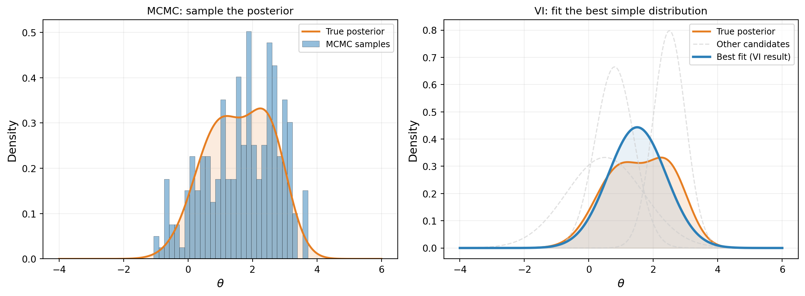
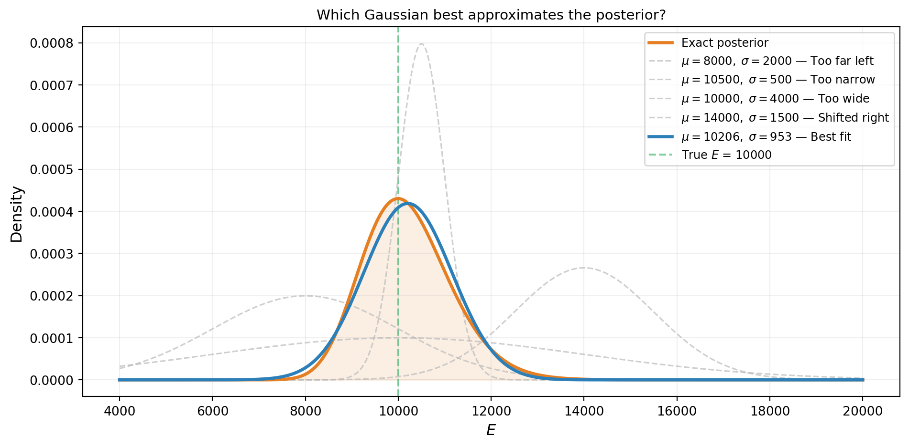
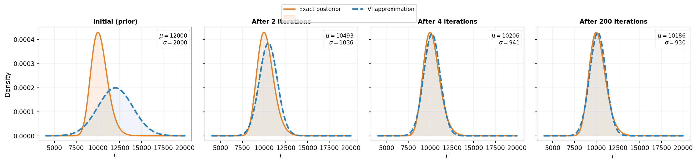
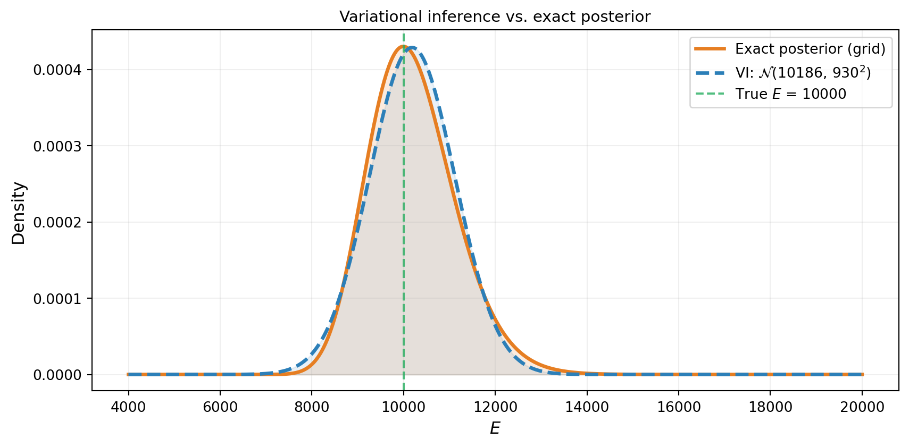
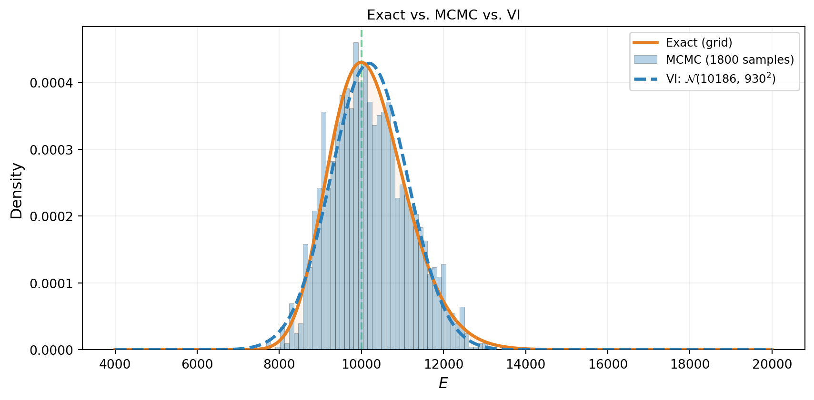
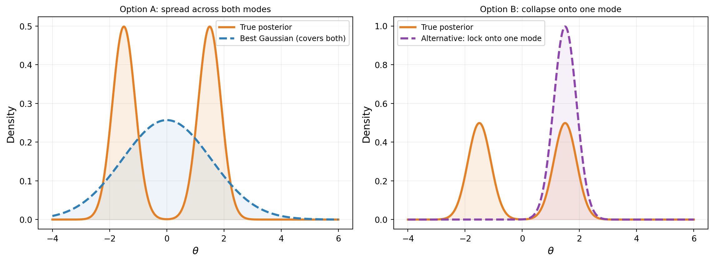

Approximating the Posterior: Introduction to Variational Inference
PyApprox Tutorial Library
Turning Bayesian inference into an optimization problem by fitting a simple distribution to the posterior.
TipDownload Notebook
Learning Objectives
After completing this tutorial, you will be able to:
- Explain the idea behind variational inference: approximate the posterior by finding the closest simple distribution
- Visualize how VI searches over candidate distributions to find the best fit
- Run VI on a 1D problem and verify it recovers the exact posterior
- Compare VI and MCMC results on the same problem
- Recognize when a simple variational family is insufficient
Prerequisites
Complete From Data to Parameters: Introduction to Bayesian Inference before this tutorial.
A Different Strategy
The Bayesian inference tutorial computed the posterior exactly on a grid. The MCMC tutorials generated samples from the posterior via a random walk. Both approaches answer the same question — what is the posterior? — but in different ways.
Variational inference (VI) takes a third approach. Instead of evaluating the posterior everywhere (grid) or wandering through it (MCMC), we pick a simple family of distributions — say, all possible Gaussians — and find the one that best matches the true posterior. Figure 1 contrasts this with MCMC.
The idea is simple: if we can parameterize a family of distributions (e.g., all Gaussians are parameterized by their mean \(\mu\) and standard deviation \(\sigma\)), then finding the best approximation is an optimization problem — search over \((\mu, \sigma)\) to minimize the mismatch with the true posterior. This is the core insight of variational inference.
Setup: The Beam Problem
We return to the cantilever beam from the Bayesian inference tutorial: tip deflection under a linearly increasing load with an uncertain Young’s modulus \(E\). The analytical formula is:
\[ \delta_{\text{tip}} = f(E) = \frac{11\, q_0\, L^4}{120\, E\, I} \]
We place a Gaussian prior on \(E\) and observe tip deflection with Gaussian noise.
from pyapprox.util.backends.numpy import NumpyBkd
from pyapprox.benchmarks.functions.algebraic.cantilever_beam import (
HomogeneousBeam1DAnalytical,
)
from pyapprox.probability.likelihood import (
DiagonalGaussianLogLikelihood,
ModelBasedLogLikelihood,
)
from pyapprox.interface.functions.fromcallable.function import (
FunctionFromCallable,
)
bkd = NumpyBkd()
# Beam parameters (matching Bayesian inference tutorial)
L, H, q0 = 100.0, 30.0, 10.0
beam_model = HomogeneousBeam1DAnalytical(
length=L, height=H, q0=q0, bkd=bkd,
)
# Prior on Young's modulus
from pyapprox.probability.univariate.gaussian import GaussianMarginal
mu_prior = 12_000
sigma_prior = 2_000
prior = GaussianMarginal(mean=mu_prior, stdev=sigma_prior, bkd=bkd)
# Wrap beam model to output only tip deflection (1 QoI out of 3)
tip_model = FunctionFromCallable(
nqoi=1, nvars=1,
fun=lambda E: beam_model(E)[0:1, :],
bkd=bkd,
)
# Standardized model: work in z = (E - mu_prior) / sigma_prior so the
# prior becomes N(0, 1) and all variational parameters are order-1.
std_tip_model = FunctionFromCallable(
nqoi=1, nvars=1,
fun=lambda z: tip_model(mu_prior + sigma_prior * z),
bkd=bkd,
)
# True parameter and synthetic observation
E_true = 10_000
delta_true = float(tip_model(bkd.asarray([[E_true]]))[0, 0])
sigma_noise = 0.4
noise_variances = bkd.asarray([sigma_noise**2])
noise_likelihood = DiagonalGaussianLogLikelihood(noise_variances, bkd)
model_likelihood = ModelBasedLogLikelihood(tip_model, noise_likelihood, bkd)
np.random.seed(42)
y_obs = float(model_likelihood.rvs(bkd.asarray([[E_true]]))[0, 0])
noise_likelihood.set_observations(bkd.asarray([[y_obs]]))
print(f"True E: {E_true}")
print(f"Observed y: {y_obs:.6f}")
print(f"Noise std: {sigma_noise}")True E: 10000
Observed y: 4.272760
Noise std: 0.4We also compute the exact posterior on a grid (as in the Bayesian inference tutorial) so we can check our work.
Some Gaussians Fit Better Than Others
The posterior is a curve. A Gaussian is also a curve, controlled by two knobs: the mean \(\mu\) (where it is centered) and the standard deviation \(\sigma\) (how wide it is). Different settings of \((\mu, \sigma)\) give different approximations, and some are clearly better than others.
Figure 2 shows five candidate Gaussians overlaid on the exact posterior. The worst candidates are centered in the wrong place or have the wrong width. The best one — the one VI would find — closely tracks the true posterior.

Watching VI Search
VI does not try every possible Gaussian. It starts from an initial guess and iteratively improves, adjusting \(\mu\) and \(\sigma\) to better match the posterior at each step. Figure 3 shows four snapshots of this process: the Gaussian approximation starts as the prior (\(\mu = 12{,}000, \sigma = 2{,}000\)) and converges to the posterior in just a few optimizer steps.

Running VI on the Beam
The code to run VI in PyApprox has three steps:
- Define the variational distribution: a Gaussian whose mean and standard deviation are tunable parameters.
- Build the objective: combines the variational distribution, the log-likelihood, and the prior into a single function that measures how well the approximation fits.
- Optimize: adjust the parameters to improve the fit.
from pyapprox.probability.conditional.gaussian import ConditionalGaussian
from pyapprox.probability.conditional.joint import ConditionalIndependentJoint
from pyapprox.probability.joint.independent import IndependentJoint
from pyapprox.probability.likelihood.gaussian import (
MultiExperimentLogLikelihood,
)
from pyapprox.inverse.variational.elbo import make_single_problem_elbo
from pyapprox.inverse.variational.fitter import VariationalFitter
# Step 1: Variational distribution q(z) = N(mu_z, sigma_z^2)
# We work in standardized space z = (E - mu_prior) / sigma_prior
# so the prior is N(0, 1) and all parameters are order-1.
mean_func = _make_degree0_expansion(bkd, coeff=0.0) # mu_z starts at 0
log_stdev_func = _make_degree0_expansion(bkd, coeff=0.0) # log(sigma_z)=0 -> sigma_z=1
cond_gaussian = ConditionalGaussian(mean_func, log_stdev_func, bkd)
var_dist = ConditionalIndependentJoint([cond_gaussian], bkd)
# Prior in standardized space
vi_prior = IndependentJoint([GaussianMarginal(0.0, 1.0, bkd)], bkd)
# Step 2: Build the objective
base_lik = DiagonalGaussianLogLikelihood(noise_variances, bkd)
multi_lik = MultiExperimentLogLikelihood(
base_lik, bkd.asarray([[y_obs]]), bkd,
)
def log_likelihood_fn(z):
"""Log-likelihood: how well does z explain the observation?"""
return multi_lik.logpdf(std_tip_model(z))
# Base samples: random draws used to approximate expectations
nsamples = 1000
np.random.seed(42)
base_samples = bkd.asarray(np.random.normal(0, 1, (1, nsamples)))
weights = bkd.full((1, nsamples), 1.0 / nsamples)
elbo = make_single_problem_elbo(
var_dist, log_likelihood_fn, vi_prior,
base_samples, weights, bkd,
)
print(f"Variational parameters to optimize: {elbo.nvars()}")Variational parameters to optimize: 2# Step 3: Optimize
fitter = VariationalFitter(bkd)
result = fitter.fit(elbo)
# Extract fitted parameters and transform back to physical E space
dummy_x = bkd.zeros((cond_gaussian.nvars(), 1))
z_mean = float(cond_gaussian._mean_func(dummy_x)[0, 0])
z_stdev = math.exp(float(cond_gaussian._log_stdev_func(dummy_x)[0, 0]))
vi_mean = mu_prior + sigma_prior * z_mean
vi_stdev = sigma_prior * z_stdev
print(f"VI result: N({vi_mean:.0f}, {vi_stdev:.0f}^2)")
print(f"Exact posterior: N({exact_mean:.0f}, {exact_std:.0f}^2)")
print(result)VI result: N(10186, 930^2)
Exact posterior: N(10206, 953^2)
VIFitResult(neg_elbo=1.3944, success=True)
NoteWhat is the optimizer actually minimizing?
The objective function (called the ELBO) measures how well the variational distribution balances two goals: explaining the data and staying close to the prior. The next tutorial derives this objective in detail. For now, the important thing is that minimizing it finds the best Gaussian fit to the posterior.
VI Recovers the Posterior
Figure 4 overlays the VI approximation on the exact grid posterior. Because the true posterior is nearly Gaussian in this problem, the fit is excellent. It is not exactly Gaussian, however: the beam model \(\delta_{\text{tip}} \propto 1/E\) is nonlinear, so the posterior inherits a slight skew (as the forward UQ tutorial demonstrated for the push-forward distribution). The Gaussian VI approximation captures the mean and width accurately but cannot represent this asymmetry — a fundamental limitation of the variational family, not the optimizer.

Comparing VI and MCMC
Both MCMC and VI should produce the same answer on this problem. Figure 5 puts all three representations on the same axes: the exact grid posterior, the MCMC histogram, and the VI curve. They agree — confirming that VI is working correctly.

The two methods produce consistent results, but notice the difference in what they return. MCMC gives a collection of samples — useful for computing any summary statistic, but noisy. VI gives a smooth, parametric density — easy to evaluate, store, and differentiate, but limited to the shapes the chosen family can represent.
When VI Struggles
A Gaussian can approximate any unimodal, roughly symmetric posterior. But what if the posterior has two well-separated modes? Figure 6 shows a bimodal posterior: the best Gaussian has to compromise, placing mass in the gap between the modes where the true posterior has almost no density.

Neither option is satisfactory. Option A places mass between the modes. Option B captures one mode but ignores the other entirely. In practice, VI with a unimodal Gaussian tends toward Option B — it locks onto a single mode. This is not a failure of the optimizer; it is a fundamental limitation of the variational family. MCMC, by contrast, can explore both modes given enough time.
TipWhen does this matter in practice?
Many engineering posteriors (including the beam problems in this tutorial series) are unimodal and approximately Gaussian, so this limitation rarely bites. Multimodality tends to arise with discrete model choices, symmetry-breaking, or wildly non-informative priors. If you suspect multimodality, MCMC is the safer choice.
What We Defer
This tutorial showed what VI does — find the best simple distribution — but not how the optimizer measures “best” or computes gradients. The subsequent tutorials fill in the details:
- What Variational Inference Optimizes derives the KL divergence and the ELBO — the objective function that VI minimizes.
- Optimizing the ELBO introduces the reparameterization trick that makes gradient-based optimization possible.
- Choosing the Variational Family addresses the limitations we saw: families that capture correlations, handle bounded parameters, and scale to higher dimensions.
- Amortized Variational Inference shows how to learn a single model that maps any dataset to its approximate posterior.
Key Takeaways
- Variational inference approximates the posterior by searching over a family of simple distributions and finding the closest one
- The search is an optimization problem: adjust the distribution’s parameters to improve the fit
- For unimodal, near-Gaussian posteriors (like the beam problem), a Gaussian VI approximation recovers the posterior accurately
- VI gives an analytical density (easy to evaluate and store), while MCMC gives samples (more flexible but noisier)
- A unimodal variational family cannot represent multimodal posteriors — this is the main limitation of standard VI
Exercises
Change the true parameter to \(E_{\text{true}} = 8{,}000\) (further from the prior mean). Does VI still recover the posterior? Compare to the grid posterior.
Increase the noise standard deviation to \(\sigma_{\text{noise}} = 2.0\) (5x larger). How does the VI result change? Is the posterior wider? Does VI or MCMC require more work?
Initialize the variational mean at \(\mu = 18{,}000\) (far from the true value). Does the optimizer still find the correct posterior?
(Challenge) Replace the single Young’s modulus with a composite beam using
CantileverBeam1DAnalytical(2 moduli: \(E_1, E_2\)). Use a diagonal Gaussian for VI. Compare the 2D marginal posteriors from VI and MCMC. Where do they agree? Where do they disagree? (Hint: look at the correlation between \(E_1\) and \(E_2\).)
Next Steps
Continue with:
- What Variational Inference Optimizes — The KL divergence, the evidence problem, and the ELBO